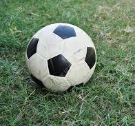

Soccer is more than just a game; it is a test of endurance, strategy, and teamwork. Playing on the pitch has taught me how to stay focused under pressure.

To keep up with professional match results and league standings, I regularly check ESPN Soccer.
| Day | Focus Area | Duration |
|---|---|---|
| Tuesday | Tactical Drills & Passing | 2 Hours |
| Thursday | Conditioning & Speed | 1.5 Hours |
| Saturday | Competitive Match Day | 3 Hours |